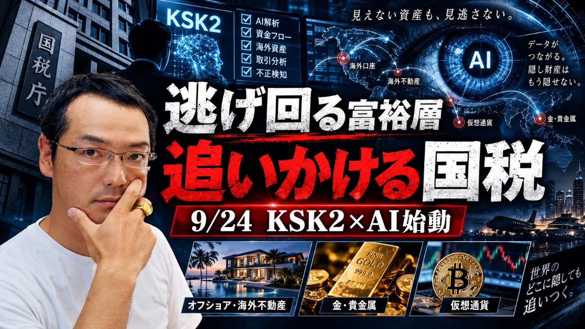
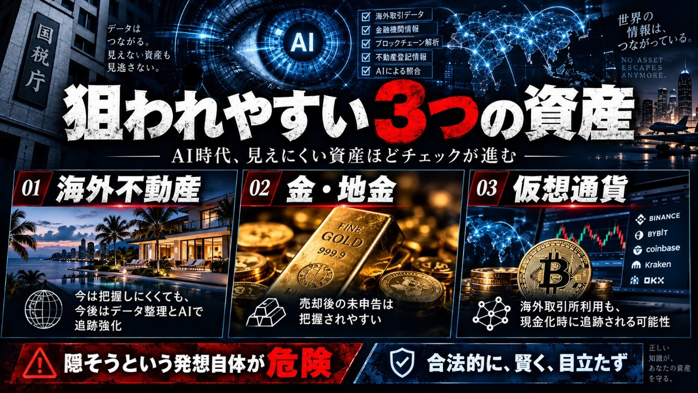
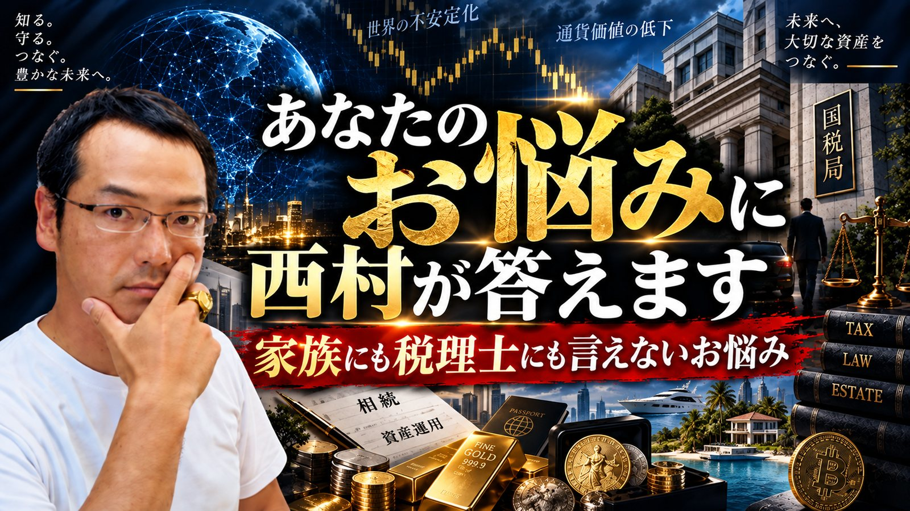

ARTICLES ／ 2026.09.18
前回に引き続きまして、国税がどのようにして富裕層を追い込んでいっているか！？を見ていきたいと思います。
来週、国税ではKSK2という新システムが導入され新たな捕捉活動が始まります。
約1週間システムを停止し新たに新システムとして発動します。
その内容を簡潔に言うと、
「不足していた人手に対してAIを活用して、申告漏れの可能性が高い人を判定する ということです」
この背景となっているのが、以下
Etc
ご理解いただけますでしょうか？
要は、富裕層に対する実地調査（2400件／年）やっていても追いつかない。
そして海外資産情報だけをみても、約半分以下しか申告されていないことが明白
要は、国税は
「隠しているでしょ！AIを活用して徹底的に探し出して、罰する！」
という事

今列記した内容は、海外資産を保有している富裕層（要は逃げてきた富裕層）を捉えるための軸で挙げましたが、まずはその方々は、前回のREPORTでも触れたように
それ以外にも
セミナー等では直接お伝えしていますが、このような流れになるという事は以前から言及しており、そもそも“隠そう”という思考を持っていること自体が危険です。
今でも地金取引で個人情報を必要としない取引を可能としている業者があることを存じていますが、その業者に査察が入ったら、そこで取引されたお客様も調査の対象になることと思います。いわゆる“芋づる式”です。
ですから、
「合法的に、賢く、目立たず」
です。
そして、その具体的な手法を活字やセミナーでお話しすることなどできるわけがないという事です。9/27オンラインセミナーは、この辺りは触れますが、具体的なことは勿論言及できません（不特定多数の人には）。個別相談であれば、今までの成功事例、失敗事例を各お客様の事例に合わせてお伝えすることはできますが。

枠が残りわずかとなって参りました。お早めにどうぞお申込みくださいませ
個別相談を申し込む